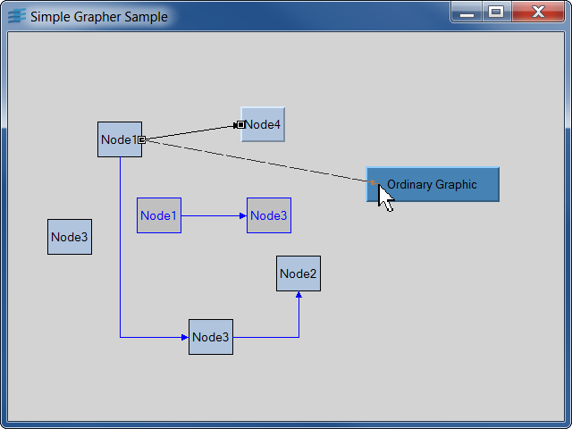

Sample: simple
Simple Grapher Sample
This sample shows how to create a simple grapher.

This sample allows you to get acquainted with the IlvGrapher class.
It adds several objects to a grapher and provides the following interactions:
- Double clicking a graphic object prints its type (node, link,
or ordinary graphic object). If the object is a node, all its connected links are
selected.
- Pressing the spaceBar makes the graph complete. This means that links
are added so that each node of the graph is connected to each of the others.
- Pressing the 'd' key replaces changes links into instances of the
IlvDoubleLinkImage class, which are drawn with two orthogonal bends.
- All other interactions with the mouse are handled by the
IlvGraphSelectInteractor interactor. With this interactor, you can select
nodes and links and change their geometry or the way they are connected.
You can also use the standard Grapher accelerators:
- 'Z': Zooms in (x2).
- 'U': Zooms out (x0.5).
- 'F': (Fits) Sets the zoom factor to display every graphic objects.
- 'i': Reinitializes the view transformer to the identity.
- 'R': Rotates the drawing with a 90 degrees angle.
- Arrow keys: Pans the view.
- Ctrl-'n': Transforms selected objects into nodes.
- 'H': Performs a horizontal tree layout, using the selected node as root.
- 'V': Performs a vertical tree layout, using the selected node as root.
Classes involved:
IlvGrapherIlvLinkImageIlvDoubleLinkImageIlvGraphSelectInteractor
Source files: